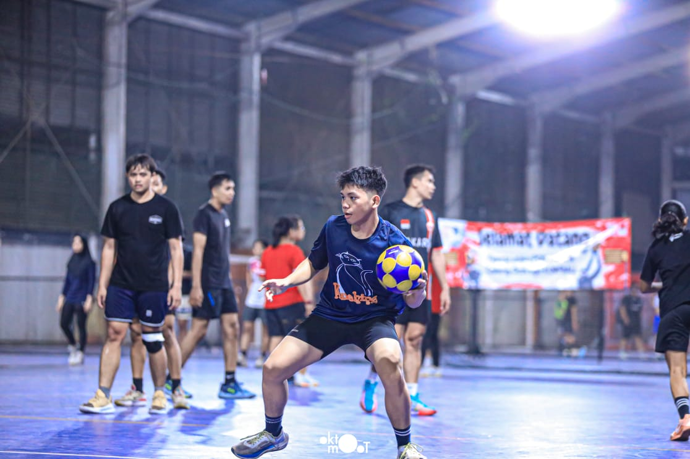
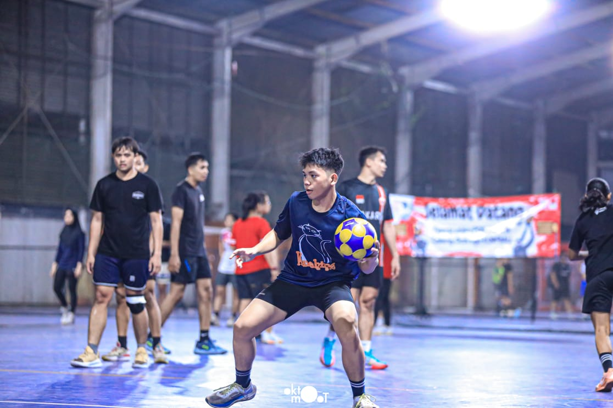
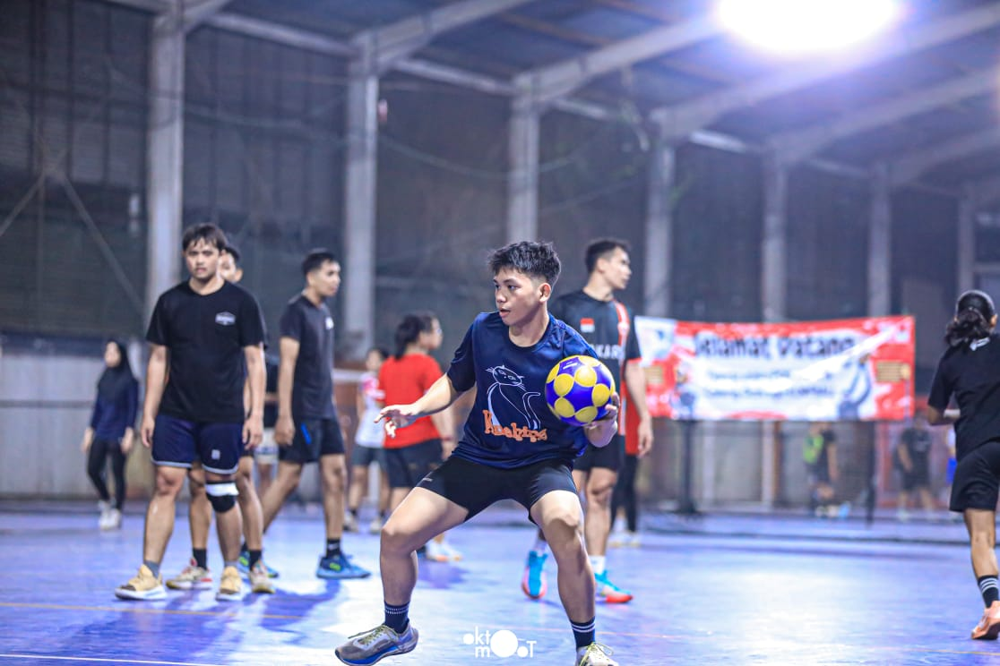

Galeri Korfball

 



Korfball adalah olahraga campuran pria & wanita yang mirip basket. Setiap tim terdiri dari 8 pemain (4 pria dan 4 wanita). Tujuannya adalah memasukkan bola ke dalam keranjang tinggi tanpa papan pantul. Korfball menekankan kerja sama dan kesetaraan gender.
